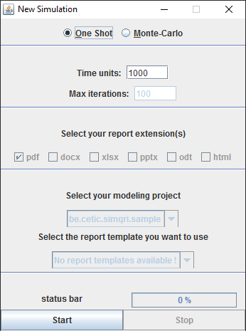

Step 1 : Open the simulation management cockpit
In order to set and launch a new simulation, you have to open the simulation management cockpit. To open this tool, make a right-click on the background of the modeling area and select "New Simulation" option. After that, a similar window will be open :

Step 2 : Choose the kind of simulation
You have then to choose a kind of simulation.
- One Shot : only one scenario is executed. "One Shot" simulations are fast but less accurate than "Monte-Carlo" simulations. Also, processing results is much slowler as for "Monte-Carlo" simulations
- Monte-Carlo : a huge quantity of scenarios are executed following the "Monte-Carlo" probabilistic methods in order to produce more accurate results. "Monte-Carlo" simulations are slowler than "One Shot" simulations.
Step 3 : Set simulation parameters
Depending the kind of simulation choosen previously, you will have to set one or four parameter(s).
- Time units (OS and MC) : the max number of time units for the execution of the simulation.
- Max iterations (MC only) : the max number of iterations. An iteration is a scenario of the simulation execution. A huge number implies a huge duration !
- Report extensions (MC only) : Select the kind of file(s) you want to generate following the reporting operation of a "Monte-Carlo" simulation.
- Modeling Project (MC only) : The modeling project in which you want to generate report files (basically, this is the curent project in which you are working...)
- Report Template (MC only) : The template you want to use to generate report files. The wizard only select templates situated in the "Report Templates" directory of the selected modeling project above.
Step 4 : Launch and abort a simulation
You are now ready to launch a new simulation ! If the simulation progress too slowly, you will always be able to abort it by clicking on the "stop" button.

In case of Monte-Carlo simulations, the reports generation will take some additional time. That's why, you will be face to face with a similar display :